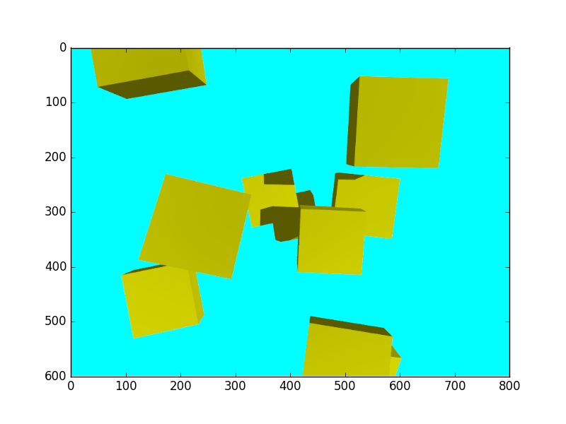
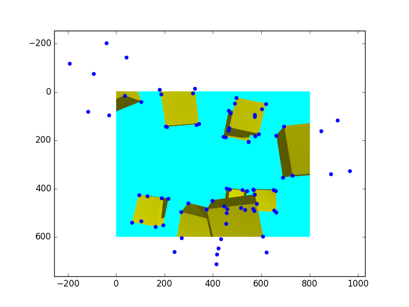

Blog
Projecting 3D points into image using Pov-Ray
July 25, 2018
When using a 3D modeling environment, it is oftentimes useful to know where a given vertex in world coordinates would appear in the camera image. For that purpose, we need to build two matrices:
- The extrinsic matrix that transforms the points from world coordinates to camera coordinates
- The intrinsic matrix which maps points in camera coordinates to pixels
In our case, we will use PoV-Ray, the persistence of vision raytracer. It is an older, but reliable raytracer that enables us to render high-quality scenes. It has a Python interface through vapory.
The extrinsic matrix
PoV-Ray uses the “look at” convention to define the camera location. Thus, following this article, we can obtain our first transform, given the camera look_at vector and its position. Note that we are using homogeneous coordinates, hence we will be using 4 by 4 matrices to represent rigid transforms.
L = normalize(look_at - location)
s = normalize(np.cross(L, direction))
up = np.cross(s, L)
R = np.vstack((s, up, -L))
t = -R.dot(location)
transform = np.vstack((np.hstack((R, t[:, np.newaxis])), np.array([0, 0, 0, 1])))The intrinsic matrix
For PoV-Ray, the “film” on which the image will be deposited is 1 unit away from the camera. PoV-Ray also uses only one FoV angle. Thus, again following this page , the intrinsic matrix can be computed using the following formula, given the FoV angle and image dimensions.
film_size = 1/(2*np.tan(np.radians(angle/2)))
K = np.zeros((3, 4))
x0 = width // 2
y0 = height // 2
fx = film_size * width
fy = fx
K[0, 0] = fx
K[0, 2] = x0
K[1, 1] = fy
K[1, 2] = y0
K[2, 2] = 1Putting it together
Let’s now render some cubes in PoV-Ray and make sure that the above equations put them at the correct spot in the image. We first write a small function that gives us the 6 vertices of a box defined by its two opposite vertices. We then instantiate 10 of those boxes at random positions and orientations.
def vertices_from_box(p1, p2):
return np.array([p1,
[p2[0], p1[1], p1[2]],
[p2[0], p2[1], p1[2]],
[p1[0], p2[1], p1[2]],
p2,
[p2[0], p1[1], p2[2]],
[p1[0], p1[1], p2[2]],
[p1[0], p2[1], p2[2]]])
n_boxes = 10
box_points = [((-0.02, -0.02, 0.0), (0.02, 0.02, 0.02))]*n_boxes
box_vertex = [vertices_from_box(*bp) for bp in box_points]
box_rpy = [30*(np.random.random(3)-0.5) for i in range(n_boxes)]
box_pos = [0.2*(np.random.random(3)-0.5) for i in range(n_boxes)]PoV-Ray uses a ZYX Euler convention, and angles are in degrees. Thus, the box coordinates in world frame are given by:
def rotation(r, p, y):
rx = np.array([[1, 0, 0],
[0, np.cos(r), -np.sin(r)],
[0, np.sin(r), np.cos(r)]])
ry = np.array([[np.cos(p), 0, np.sin(p)],
[0, 1, 0],
[-np.sin(p), 0, np.cos(p)]])
rz = np.array([[np.cos(y), -np.sin(y), 0],
[np.sin(y), np.cos(y), 0],
[0, 0, 1]])
return rz.dot(ry.dot(rx))
for i in range(n_boxes):
box_vertex[i] = rotation(*[np.radians(a) for a in box_rpy[i]]).dot(box_vertex[i].T).T + box_pos[i]Note that PoV-Ray will apply rotation and transformations in whichever order you specify them. Thus you might have to invert the order of rotation / translation to match your scene definition. Let’s render the PoV-Ray scene using Vapory:
cam = vapory.Camera('location', location, 'look_at', look_at, 'angle', angle, 'up', direction)
light = vapory.LightSource((2, 0, -4), 'color', 'White')
background = vapory.Background('color', 'Cyan')
boxes = [vapory.Box(b[0], b[1],
vapory.Texture(vapory.Pigment('color', 'Yellow')),
'rotate', rpy, 'translate', pos,
vapory.Normal('bumps', 1, 'scale', .2))
for b, rpy, pos in zip(box_points, box_rpy, box_pos)]
scene = vapory.Scene(camera = cam,
objects = [light, background] + boxes,
included = ["colors.inc"])
img = scene.render(width = width, height = height, antialiasing = 0.01, quality = 10)
plt.imshow(img)The result should be a random arrangement of yellow cubes against a blue background, with some shadows, similar to this one: 
If we now plot the box points in the image:
for bx in box_vertex:
vertices_in_pixel_space = to_image(bx)
# If up is along x, then we need to invert axes
horizontal = np.argwhere(direction == 0)[0]
vertical = np.argwhere(direction == 1)[0]
plt.scatter(vertices_in_pixel_space[:, horizontal], vertices_in_pixel_space[:, vertical], color='blue')We obtain the desired result, where plotted vertices actually match the rendered cube vertices: 
Note that some of the vertices go out of the image. You might want to clip the results to make sure that they actually land inside your viewport!
Full code is available as a gist here.